Petito – Creative Animals & Petshop WooCommerce Theme
Wonderful theme with excellent user experience.
- By: BZOTech
Before you begin, please be sure to go over this material. We layout a lot of useful information and provide you all the information you need to utilize the Petito Theme. If you can’t find your solution in our documentation, please contact us via the support page. We are delighted to assist you, and you will receive a response from us much sooner than you anticipated. Thank you for your interest in the Petito WordPress Theme; we hope you enjoy it!
1. WORDPRESS BACKGROUND KNOWLEDGE
You must have a functional version of WordPress installed in order to install this theme. Follow the instructions if you need assistance installing WordPress in WordPress Support.
Useful links for WordPress information.
- WordPress Codex – General info about WordPress and how to install on your server.
- First Steps With WordPress – General info about multiple topics about WordPress.
- FAQ New To WordPress – The most popular FAQ’s regarding WordPress.
2. INSTALLATION & UPDATE
2.1. System Requirements
Please ensure that your hosting provider and website match the minimal criteria listed below before installing the theme:
To run eFast, we recommend your host and website support:
- Minimum requirements to run WordPress.
- Use the most recent version of WordPress.
- Always use strong passwords for FTP and databases.
Important Note about PHP Configuration:
You may encounter issues linked to low PHP configuration restrictions in a variety of situations, such as a white screen, demo material that fails to import, empty page content, and other similar concerns. The fix is to raise the PHP limitations. You may change this on your own by modifying the php.ini file in the root directory, or you can contact your web host and request that they increase those limitations to a bare minimum, as shown below.
-
max_input_time = 6000 -
memory_limit = 128M -
max_execution_time= 6000 -
post_max_size = 64M -
upload_max_filesize = 32M -
set_time_limit (600)
2.2. Theme Installation
Before installing Petito theme, you need to have a WordPress site that meets all the theme requirements and have the latest Petito theme package available in your computer.
There are 02 ways for you to upload the theme into your site: Upload theme via WordPress Admin and Upload theme via FTP. If the theme file size is larger than 8M, it should be uploaded via FTP.
WordPress Upload
- Navigate to the Admin Panel of your site (i.e. yoursite.com/wp-admin/).
-
Login to your WordPress Dashboard and go to
Appearance > Themeand clickAdd Newto add new theme. -
Click the
Upload Themebutton thenChoose Fileand selectbw-petio.zipfile and clickInstall Now. - It will take a few minutes to install the theme.
-
After seeing the message Theme installed successfully, click on
Activate, you can use Petito for your site.
FTP Upload
- Access your FTP client, such as FileZilla to start upload Petito theme.
-
Navigate to the folder of your website (i.e. yoursite.com/wp-content/themes) then upload and extract theme file
bw-petito.zipto this directory. After that, you will have a theme folder named as Petito in your site’s directory. -
Login to the Admin Panel of your site (i.e. yoursite.com/wp-admin/). Go to
Appearance > Themesto find Petito theme. -
After seeing Petito theme’s thumbnail, choose and click on
Activateto install it in your site.
2.3. Plugin Installation
To ensure that the theme works properly and has all of its features, all of the essential plugins should be installed and enabled when the theme is installed.
-
After activating the theme, select
Install Pluginsoption in Petito theme details.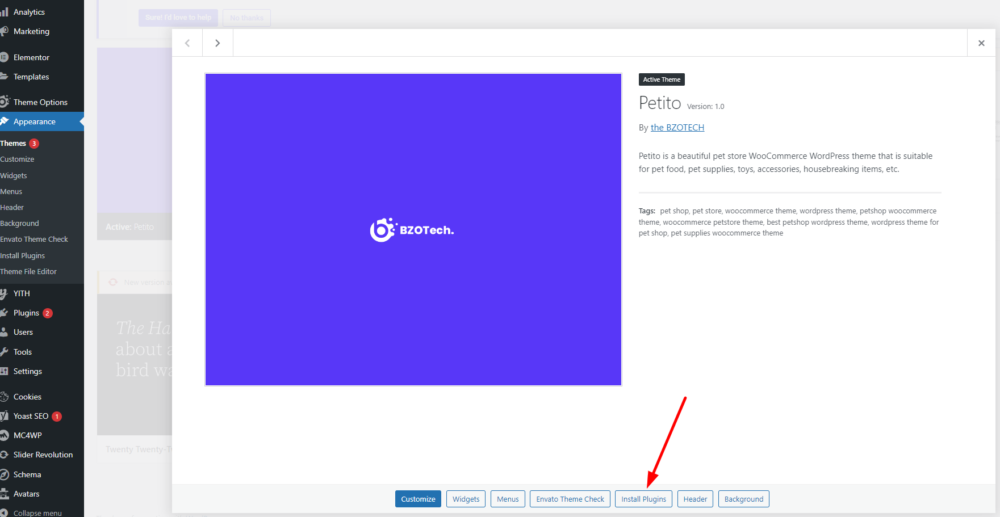
-
Choose all of required plugins then select
Installand clickApply.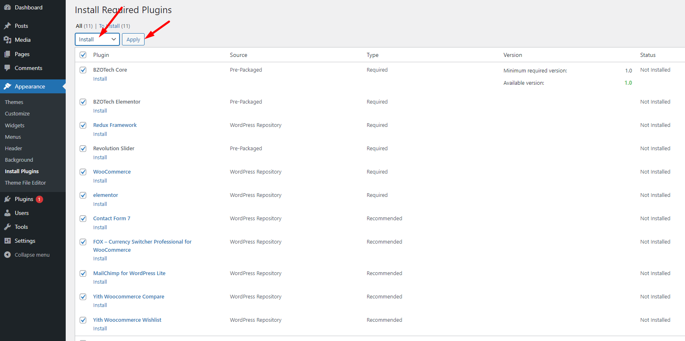
-
After successful installation, select option
Return to Required Plugins Installer, select all of them then selectActivateand clickApply.
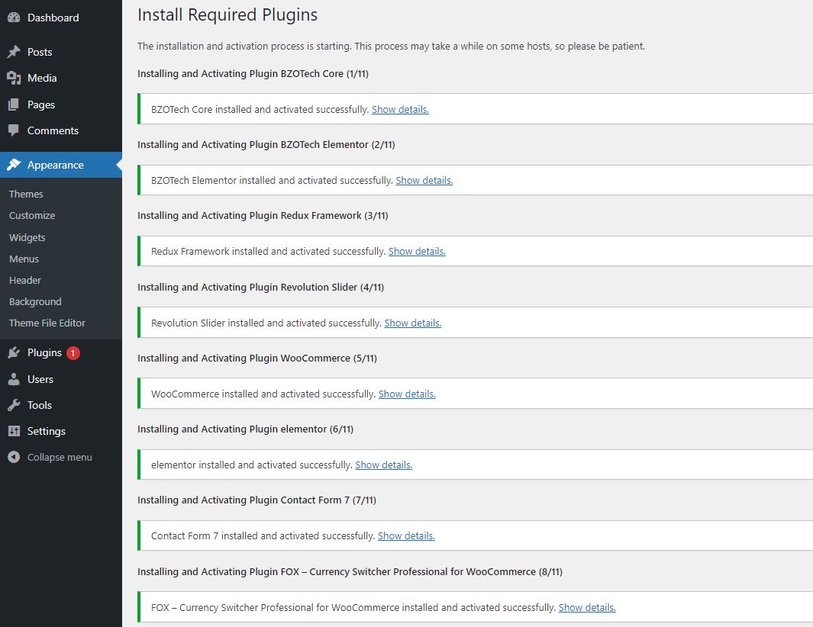
If you find that any plugin was not successfully installed when installation, please select each of them and install them one by one again. If your server does not allow automated installation, you must install them manually using plugins in the data/plugins folder.
2.4. One Click Demo Import
Importing demo data is the simplest method to get your theme up and running. Instead of creating content from scratch, you will be able to quickly edit everything. Just by some clicks, you will get a full website look exactly as same as our live demo.
-
In the Dashboard, go to
Theme Options > Import Demo Content. There are 3 import demo content options:- Import Now: Full import demo content.
- Import Without Media: Import demo content without media
- Import Media: Only import Media
In this guide, we will go through the full import option – Import Now.
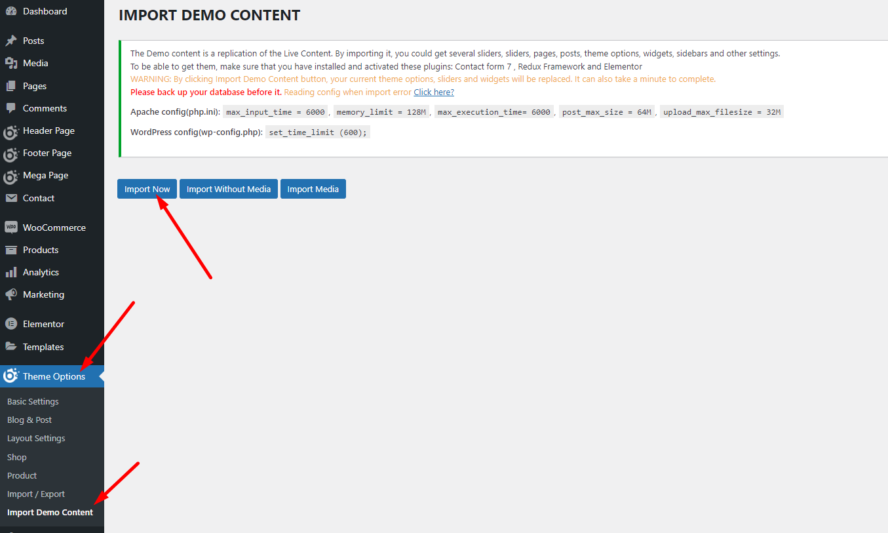
-
It can take a few minutes to import everything. Please wait until it is completed and do not refresh the page or hit the back button. Once it completes, you will see a Import Complete! message.
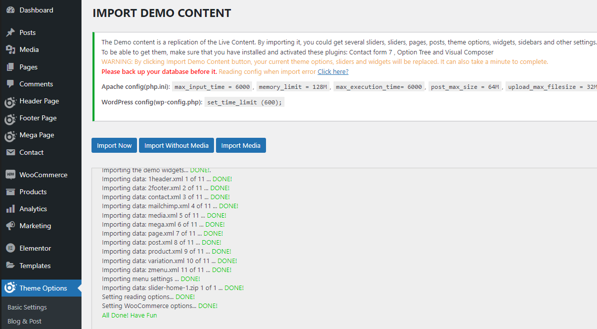
IMPORTANT: After import the demo data, please do following cofigurations:
+ Set up Mailchimp as this instruction.
+ Setting Layout Elementor: Go to Edit with Elementor -> Site Setting -> Layout -> Content Width then set 1470 for desktop and Gap between elements (px) = 0, Gap between elements (px): active all screen.
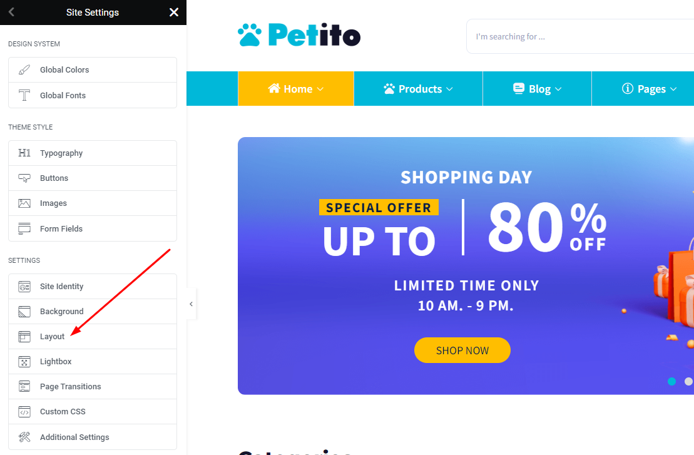
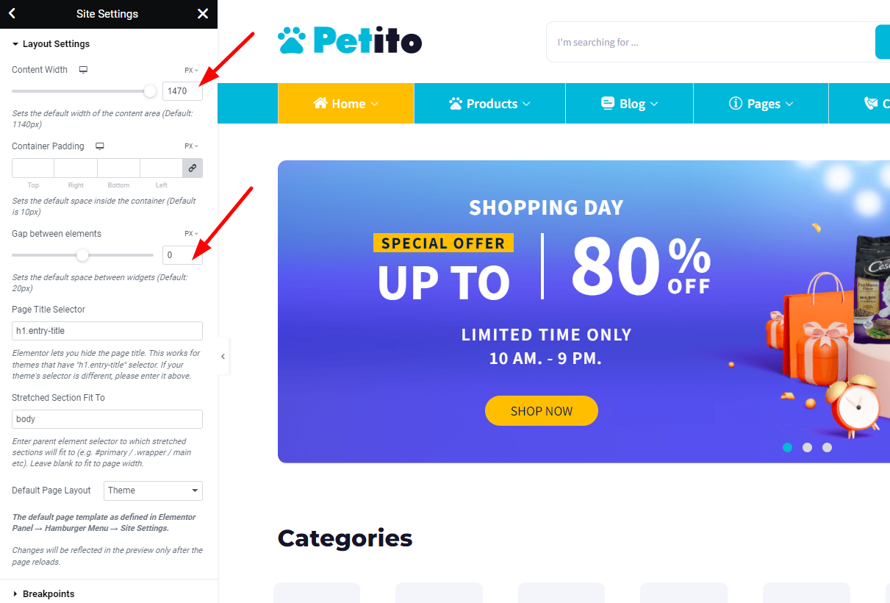
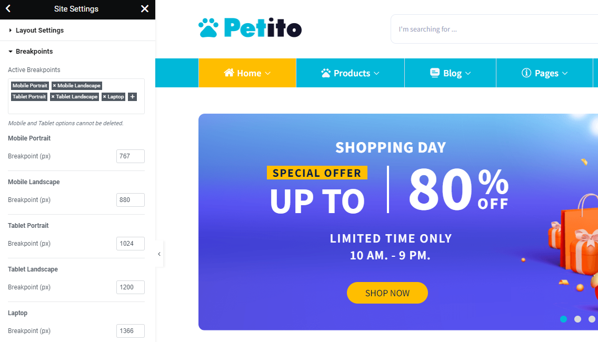
+ Save Menu: Go to Admin Dashboard -> Appearance -> Menus -> Main Menu -> Save Menu.
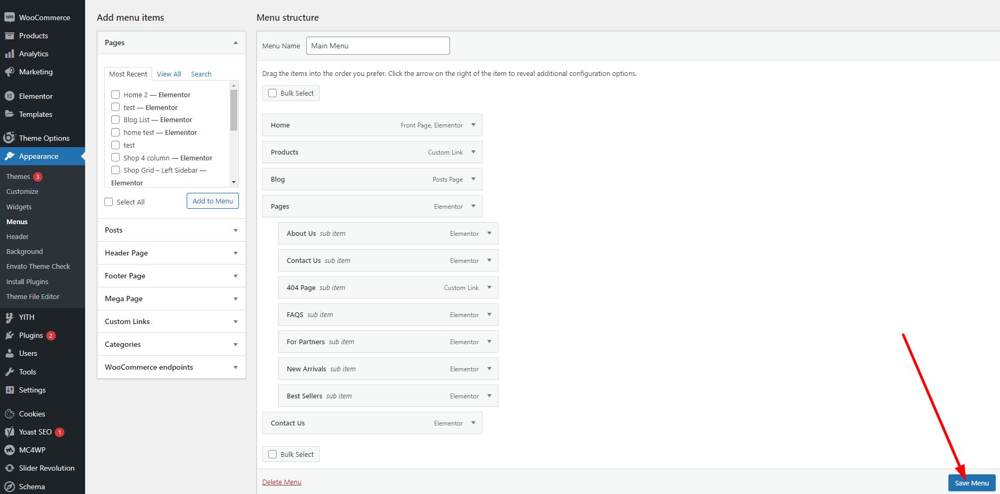
+ Save YITH WooCommerce Compare config: Go to Admin Dashboard -> YITH -> Menus -> Compare -> SAVE OPTIONS.
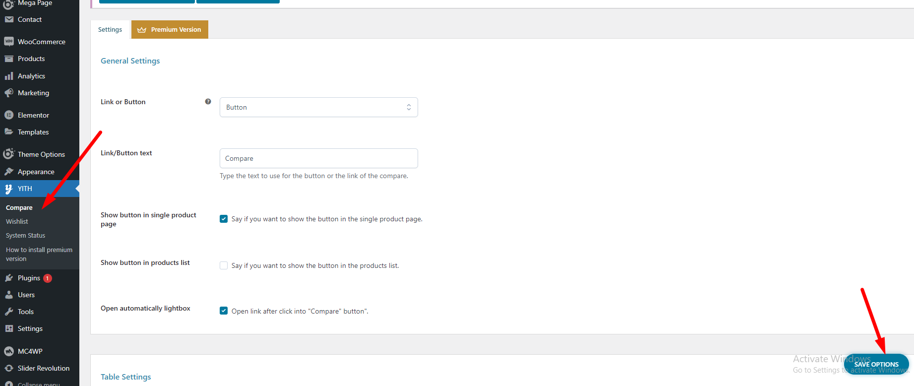
+ Config My Account Page: Go to Admin Dashboard -> Pages -> My Account -> Edit Page -> Page Setting -> General Setting -> Sidebar position -> No Sidebar -> Update.
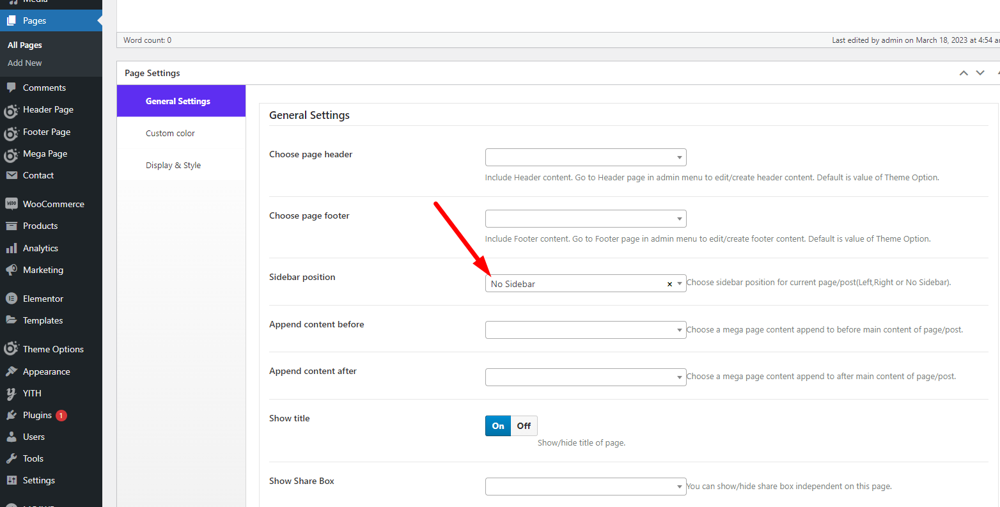
+ Config Register Option: Go to Admin -> Setting -> General -> Check the option 'Anyone can register'.
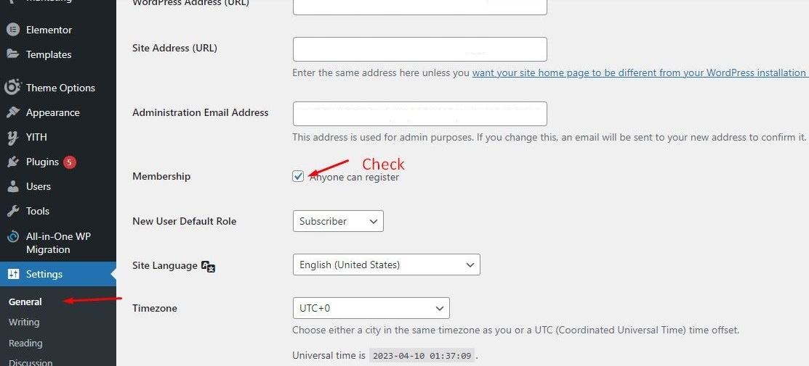
2.5. Update Theme
To update the theme, please download the latest package from Themeforest --> delete the old theme and reinstall the new package.
Note: Please backup your website before updating theme and make sure you do not modify any files in the theme directory before updating to ensure your customizations are not lost when updating. You should use the Child Theme to customize the theme.
3. CONFIGURATION
3.1. Global Configuration
This configuration includes all settings for Petito theme.
In Admin Dashboard, go to Theme Options
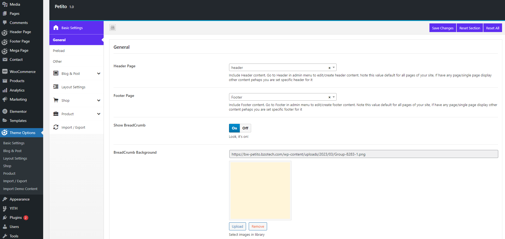
| Config Name | Value | Description |
| Basic Settings | ||
| General | ||
| Header Page | Select option | Select header style for all pages |
| Footer Page | Select option | Select footer style for all pages |
| Show BreadCrumb | On/Off | Turn on, off the breadcrumb |
| 404 Page | Select option | Select the page including to 404 page |
| Preload | ||
| Show Preload | On/Off | Turn on, off the preload |
| Background | Color picker | Change default body background for preload |
| Preload Style | Select option | Choose default preload style for your site |
| Other | ||
| Show scroll top button | On/Off | This allow you to show or hide scroll top button |
| Show wishlist notification | On/Off | This allow you to show or hide wishlist notification when add to wishlist |
| Show tool panel | On/Off | This allow you to show or hide tool panel |
| Body Background | Color picker | Change default body background |
| Body typography | Select option | Custom font in Body |
| Title typography | Select option | Custom font in Title |
| Main color | Color picker | Change main color of your site |
| Main color 2 | Color picker | Change main color 2 of your site |
| Page Style | Select option | Choose default style for pages |
| Custom container width(px) | Value | You can custom width of container on your site. Default is 1200px |
| Show share box | Select option | You can show/hide share box on post, page, product pages |
| Add custom share box | Select option | Add more share box |
| Blog & Post | ||
| General | ||
| Blog banner | On/Off | Show/hide banner post list |
| Background banner | Upload | Enter background image |
| Content banner | Text editor | Enter content banner |
| Link banner | Url | Enter Link banner |
| Append content before post/blog/archive page | Select option | Choose a mega page content append to before main content of post/blog/archive page |
| Append content after post/blog/archive page | Select option | Choose a mega page content append to after main content of post/blog/archive page |
| Sidebar Blog | Select option | Set sidebar position for your blog page. Left, Right, or No sidebar |
| Sidebar select display in blog | Select option | Choose a sidebar to display |
| Sidebar blog style | Select option | Set sidebar style for your blog page |
| Default style | Select option | Choose a style to active display |
| Blog pagination | Select option | Choose a style to active display |
| Show number filter | On/Off | Show/hide number filter on blog page |
| Show type filter | On/Off | Show/hide type filter(list/grid) on blog page |
| Show order filter | On/Off | Show/hide order filter(list/grid) on blog page |
| Show meta data | Yes/No | Show/hide meta data(author, date, comments, categories, tags) on post detail |
| List Settings | ||
| Custom list thumbnail size | Value | Enter size thumbnail to crop. [width]x[height]. Example is 300x300 |
| Sub string excerpt | Value | Enter number of character want to get from excerpt content. Default is full(999). Example is 80. Note: This value only apply for items style can be show excerpt |
| List item style | Select option | Choose a style to active display |
| Grid Settings | ||
| Grid column | Select option | Choose a style to active display |
| Custom grid thumbnail size | Value | Enter size thumbnail to crop. [width]x[height]. Example is 300x300 |
| Sub string excerpt | Value | Enter number of character want to get from excerpt content. Default is full(999). Example is 80. Note: This value only apply for items style can be show excerpt. |
| Grid item style | Select option | Choose a style to active display |
| Grid display | Select option | Choose a style to active display |
| Post detail Settings | ||
| Style Single Post | Select option | Select the available style for single post |
| Sidebar Single Post | Select option | Set sidebar position for your post detail page. Left, Right, or No sidebar. |
| Sidebar select display in single post | Select option | Choose a sidebar to display |
| Sidebar post style | Select option | Set sidebar style for your single post. |
| Append content before post detail | Select option | Choose a mega page content append to before main content of post detail. |
| Append content after post detail | Select option | Choose a mega page content append to after main content of post detail. |
| Show thumbnail/media | On/Off | Show/hide thumbnail image, gallery, media on post detail. |
| Custom single image size | Value | Enter size thumbnail to crop. [width]x[height]. Example is 300x300 |
| Show meta data | Select option | Show/hide meta data(author, date, comments, categories, tags) on post detail. |
| Show author box | On/Off | Show/hide author box on post detail. |
| Show navigation post | On/Off | Show/hide navigation to next post or previous post on the post detail |
| Show related post | On/Off | Show/hide related post on the post detail. |
| Related title | Text field | Enter title of related section. |
| Related number post | Value | Show/hide order filter(list/grid) on blog page |
| Related custom number item responsive | Value | Enter item for screen width(px) format is width:value and separate values by ",". Example is 0:2,600:3,1000:4. Default is auto. |
| Related item style | Select option | Choose a style to active display |
| Layout Settings | ||
| Sidebar Page | Select option | Set sidebar position for your default page. Left, Right, or No sidebar. |
| Sidebar Position on Page Archives | Select option | Set sidebar position for your archives page(category/tag/author page...). Left, Right, or No sidebar |
| Sidebar select display in page Archives | Select option | Choose a sidebar to display |
| Sidebar archive style | Select option | Set sidebar style for your archive |
| Sidebar Position on search page | Select option | Set sidebar position for your search page. Left, Right, or No sidebar |
| Add SideBar | Add custome sidebar | |
| Shop | ||
| General | ||
| Show banner | On/Off | Show/hide banner product list |
| Background banner | Upload image | Enter background image |
| Content banner | Text field | Enter content banner |
| Link banner | Link | Enter Link banner |
| Sidebar Position WooCommerce page | Select option | Set sidebar position for your WooCommerce page(Shop, Checkout, Cart, My Account, Product category/tag/taxonomy page...). Left, Right, or No sidebar |
| Sidebar select WooCommerce page | Select option | Choose one style of sidebar for WooCommerce page |
| Sidebar woo style | Select option | Set sidebar style for your woo |
| Default style | Select option | Choose a style to active display |
| Gap Products | Select option | Choose space. The space between the items on the shop page |
| Product Number | Value | Enter number product to display per page. Default is 12 |
| Product new in(days) | Value | Enter number to set time for product is new. Unit day. Default is 0 |
| Shop pagination | On/Off | Choose a style to active display |
| Shop ajax | On/Off | Enable ajax process for your shop page |
| Thumbnail animation | Select option | Choose a animation. |
| Show number filter | On/Off | Show/hide number filter on shop page |
| Show type filter | On/Off | Show/hide type filter(list/grid) on shop page |
| Show order filter | On/Off | Show/hide order filter(list/grid) on shop page |
| Show color attribute | On/Off | Show/hide color attribute on list item product |
| Show button quick view | On/Off | Turn on/off quickview option |
| Quick view style | Select option | Choose a style to display |
| List Settings | ||
| Grid column | Select option | Enter size thumbnail to crop. [width]x[height]. Example is 300x300 |
| List item style | Value | Choose a style to active display |
| Grid Settings | ||
| Custom list thumbnail size | Select option | Choose a style to active display |
| Custom grid thumbnail size | Select option | Enter size thumbnail to crop. [width]x[height]. Example is 300x300 |
| Grid item style | Select option | Choose a style to active display |
| Grid display | Select option | Choose a style to active display |
| Advanced | ||
| Cart display | Select option | Choose a style to active display |
| Checkout display | Select option | Choose a style to active display |
| Header WooCommerce Page | Select option | Include Header content. Go to Header in admin menu to edit/create header content. Note this value default for all pages of your site, If have any page/single page display other content pehaps you are set specific header for it |
| Footer WooCommerce Page | Select option | Include Footer content. Go to Footer in admin menu to edit/create footer content. Note this value default for all pages of your site, If have any page/single page display other content pehaps you are set specific footer for it |
| Append content before WooCommerce page | Select option | Choose a mega page content append to before main content of page/post |
| Append content after WooCommerce page | Select option | Choose a mega page content append to after main content of page/post |
| Product | ||
| General | ||
| Product detail style | Select option | Select style of product detail |
| Sidebar Position WooCommerce Single | Select option | Left, or Right, or Center |
| Image zoom | Select option | Choose a style to display |
| Product tab style | Select option | Choose a style to display |
| Show Excerpt | On/Off | Turn on/off excerpt |
| Extra display | ||
| Show latest products | On/Off | Turn on/off latest products |
| Show upsell products | On/Off | Turn on/off upsell products |
| Show related products | On/Off | Turn on/off related products |
| Show Single Number | Value | Show single number post |
| Show Single Size | Value | Custom size for related,upsell products. Enter size thumbnail to crop. [width]x[height]. Example is 300x300 |
| Custom item devices | Value | Enter item for screen width(px) format is width:value and separate values by ",". Example is 0:2,600:3,1000:4. Default is auto |
| Single item style | Select option | Choose a style to active display |
| Advanced | ||
| Append content before product page | Select option | Choose a mega page content append to before main content of page/post |
| Append content before product tab | Select option | Choose a mega page content append to before product tab |
| Append content after product tab | Select option | Choose a mega page content append to before product tab |
| Append content after product page | Select option | Choose a mega page content append to after main content of page/post |
| Import / Export | ||
| Import Options | Import from Clipboard / Upload file | This will overwrite all existing option values, |
| Export Options | Copy from Clipboard / Export File | Here you can copy/download your current option settings. Keep this safe as you can use it as a backup should anything go wrong, or you can use it to restore your settings on this site (or any other site). |
4. TRANSLATE THEME/PLUGIN WITH LOCO TRANSLATE
Loco Translate provides in-browser editing of WordPress translation files. It also provides localization tools for developers, such as extracting strings and generating templates.
(Note: We used MedXtore WordPress theme screenshots for instruction.)
First, you need to install and active Loco Translate plugin for your site.


4.1. Translate Theme
Step 1: In WordPress Dashboard, Go to Loco Translate -> Themes


Step 2: Choose theme want to translate from theme list.


Step 3: Click to New language to add language to translate. Or choose exits language to edit.


Step 4: Choose a language and location and click Start translating to start translate.

Step 5: Translate interface


1: Click Sync button to update new pot file. Use when update theme or update pot file in theme-folder -> languages folder.
2: Enter key to find text/string
3: Source text, click to text want to translate.
4: Source text display.
5: Enter text translated.
6: Click Save to finish.
4.2. Translate Plugin
Same as translate theme, In WordPress Dashboard, Go to Loco Translate -> Plugins and sequentially the remaining steps as you are translating the theme.
5. FAQS
5.1. Can Not Import Demo Content
While importing demo content, you may get error “Request Timeout” message or “Stop Working” message like this:

The fix is to raise the PHP limitations by modifying the php.ini file in the root directory, or you can contact your web host and request that they increase those limitations to a bare minimum, as shown below.
max_input_time = 6000memory_limit = 128Mmax_execution_time= 6000post_max_size = 64Mupload_max_filesize = 32Mset_time_limit (600)
After increase these limitations, you can import without media and import media separately. While importing media, you might get this error too. Please try to import several times until it successes.
If it does not work, please send us your site URL and admin account to check directly here: https://support.bzotech.com/
5.2. How To Update Theme
To update theme, download the latest package from Themeforest -> delete the old theme and reinstall the new theme package.
Note:
- Make sure you do not modify any code files in our theme directory before updating to make sure your customizations are not lost when updating. If you need to backup your theme before updating. You should use the Child Theme to customize the theme.
- The widget setting is not saved when you update theme, BEFORE update theme, please open the widget setting in a new window and keep it to compare after update.

5.3. How To Change Logo
5.3.1. Change Header Logo
Login to Admin -> Go to site -> Hover on Edit with Elementor -> Select Header x (x is the sequence number of the header).


5.3.2. Change Footer Logo
Login to Admin -> Go to site -> Hover on Edit with Elementor -> Select Footer x (x is the sequence number of the footer).


5.4. How To Enable Register Page
Go to Admin -> Setting -> General -> Check the option 'Anyone can register'.

5.5. How To Remove ‘Buy Now’ And ‘Support’ Buttons

Go to Admin -> Theme Options -> Basic settings -> Other -> Remove Tool panel. or turn off 'Tool panel' option.

OR

5.6. How To Remove/Hide Newsletter Popup

The newsletter popup is located in Homepage or in footer. You can edit/remove it with Edit with Elementor.
1. Located in Homepage
Login to Admin -> go to Homepage frontend -> Edit with Elementor -> Find mailchimp section -> Left sidebar -> Advanced -> Responsive -> Turn off all options. Or edit it's content.

If you wanna to remove it, simply delete this section.

2. Located in Footer
Login to Admin -> go to frontend -> Hover on Edit with Elementor -> Footer -> Find mailchimp section -> Left sidebar -> Advanced -> Responsive -> Turn off all options. Or edit it's content.


5.7. How To Show/Hide ‘Back To Top’ Button

Go to Admin -> Theme Options -> Basic settings -> Other -> Show scroll top button.

5.8. Show Categories and Attribute Filters In WooCommerce Sidebar Filter

Go to Admin -> Appearance -> Widgets -> WooCommerce Sidebar -> BZOTech Categories Filter or BZOTech Attributes Filter.

With Category widget, empty categories will not show there, only shows categories with products added.
With Attribute filter widget, please ensure you created product attributes in Product -> Attributes.
5.9. Inner Pages Do Not Get Default Homepage Header & Footer
Go to Pages -> Default homepage -> Edit -> Page Settings -> General Settings -> Unselect header and footer style.

Go to General setting -> select the header, footer of default homepage.

Go to Theme Options -> Basic settings -> Others -> Turn off Section.

5.10. My Currency Icon Not Displaying Well in Header

In some case, you may see the currency icon not display well. To solve it, in Admin Dashboard, go to WooCommerce -> Setting -> Currency


5.11. How To Change 'Add To Cart' Button Text In The Theme Editor

- Go to your WordPress Dashboard. Make sure you’re logged in as the administrator.
- Now Go to Appearance> Theme Editor
- You should see the ‘Theme Files” on the right. In the Theme- files choose “Theme Functions” (there will be a label underneath saying functions.php).
- Copy these below codes at the end of the functions.php file and Save:
Code to change the add to cart WooCommerce button text in the shop/archive pages:
// Change "Add to Cart" > "Add to Bag" in Shop Page
add_filter( 'woocommerce_product_add_to_cart_text', 'woocommerce_shop_page_add_to_cart_callback' );
function woocommerce_shop_page_add_to_cart_callback() {
return __( 'Add to Bag', 'text-domain' );
}
Code to change the add to cart button for a single product:
// Change "Add to Cart" > "Add to Bag" in Single Page
add_filter( 'woocommerce_product_single_add_to_cart_text', 'woocommerce_single_page_add_to_cart_callback' );
function woocommerce_single_page_add_to_cart_callback() {
return __( 'Add to Bag', 'text-domain' );
}
5.12. How To Change Main Color And Fonts
In Admin Dashboard, go to Theme Options -> Basic Settings -> Other, scroll down and change the options -> Save Changes

5.13. How To Edit Mobile Footer Bar

EDIT
To edit mobile footer, in Admin Dashboard, go to Mega Pages -> Append content after footer -> Edit with Elementor and edit with your content. Then UPDATE to save your changes.


SHOW/HIDE ON MOBILE
To show or hide footer menu on mobile, in Admin Dashboard, go to Theme Options -> Basic Settings -> Other -> Append content after footer and select or remove the Append content after footer mega page. Then Save Changes to save your option.

5.14. Turn On/OFF Breadcrumb

GLOBLE SETTINGS
Go to Theme Options -> Basic Settings -> General -> Breadcrumb

This setting is applied to the all pages including product pages, blog pages. If this option is turned on, please check settings on other sections and turn it off.
SHOP PAGEGo to Theme Options -> Shop -> Advanced-> Append content before WooCommerce page
If select this option, please turn off "Breadcrumb" option in Basic Settings

PRODUCT PAGE
Go to Theme Options -> Product -> Advanced-> Append content before product page
If select this option, please turn off "Breadcrumb" option in Basic Settings

BLOG & POST PAGES
Go to Theme Options -> Shop -> Advanced-> Append content before WooCommerce page
If select this option, please turn off "Breadcrumb" option in Basic Settings

EDIT BREADCRUMB IMAGE
Medthod 1: Applied for MedXtore V1 (from demo 1 to 12)
Go to Theme Options -> Basic Settings -> General -> Breadcrumb background image

Method 2:
To edit breadcrumb image, in Admin Dashboard, go to Mega Pages -> Breadcrumbs -> Edit with Elementor and edit with your image. Then UPDATE to save your changes.

5.15. How To Change Currency
Our theme uses 'FOX - Currency Switcher Professional for WooCommerce' plugin for multi currencies.
1. If your site using multi-currencies, you can select the primary currency:
In Admin Dashboard, go to WooCommerce -> Settings -> Currency, select your primary currency -> Save Changes

2. If your site has only 1 currency:
Firstly, deactivate 'FOX - Currency Switcher Professional for WooCommerce' plugin
Then, in Admin Dashboard, go to WooCommerce -> Settings -> General -> Currency Options , select your primary currency -> Save Changes

5.16. Enable Sticky Menu
Login to Admin -> go to frontend -> Hover on Edit with Elementor -> Choose your header (Ex: Header KidXtore - home 1)

Click to select Menu -> Enable 'Menu sticky' option -> Update to save

5.17. Edit Header/Footer and Homepage with Elementor
Login to Admin -> go to homepage frontend (or page built with Elementor that you want to edit with) -> Hover on Edit with Elementor
-> Edit with Elementor: Edit homepage/current page with Elementor (the page must be built with Elementor)
-> Header KidXtore - home 1: Edit header with Elementor
-> Footer KidXtore - home 1: Edit footer with Elementor

5.18. Set Default WooCommerce Pages: Checkout page, Cart page, Shop page
To tell WooCommerce what pages to use for Cart, Checkout, My Account, and Terms and Conditions, go to WooCommerce > Settings > Advanced.

To tell WooCommerce what pages to use for the Shop page go to WooCommerce > Settings > Products.

5.18. How to Remove Sidebar from Pages
Go to Admin > Pages > Edit > Page settings > General Settings > Sidebar position > No Sidebar > Update

6. SUPPORT
Knowledge Base
Before filing a new support ticket, please follow the steps below to assist us expedite your request. This is for everyone’s advantage and will assist to make the entire process more efficient. It’s critical, and we ask that everyone to these guidelines.
Read the item documentation first:
The documentation covers all the item setting and configuration. You may find the solution for your issues here.
Important considerations for your website:
- Runs the most recent version of the item and validate all Theme Requirements.
- Disable any other third-party plugins you may be using to see whether this resolves the issue.
- Clear and deactivate all caches, including browser, plugin, and server caches.
Please keep in mind that providing us with information about your website and some screenshots of the problem will make it simpler for us to answer your query and assist you more quickly.